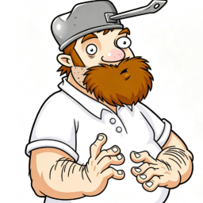
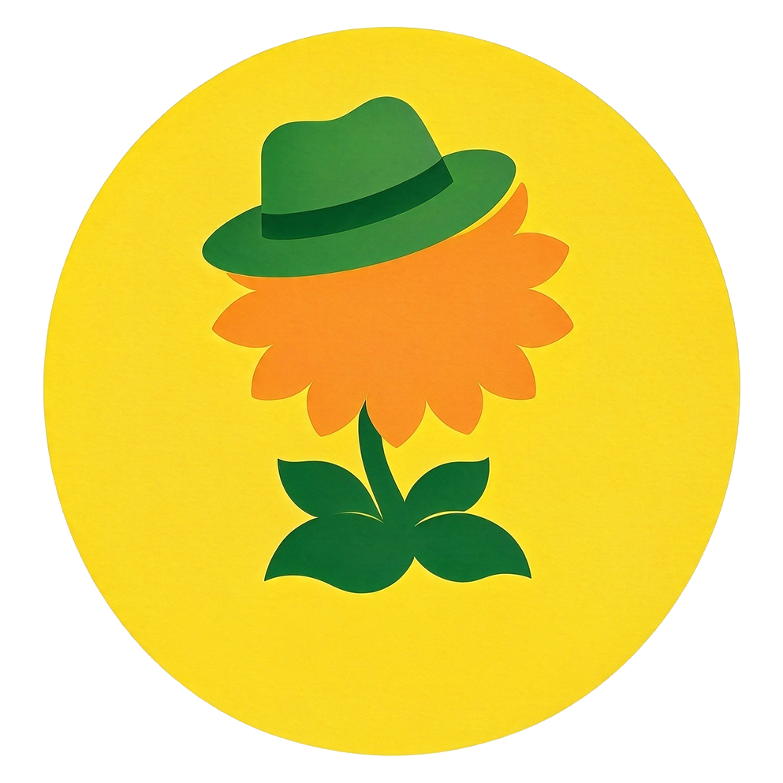

阵营工坊、特殊关卡传送带、禅境花园管家、娱乐玩法——想要的全在一个窗口里。畅玩机也在这里面：拿到分享码粘进去就能开打。
最新 持续更新 · 支持 Win 7 – 11 版本— 体积— 平台Win 7 – 11 查看详情 →
PvZ 关卡编辑器 关卡设计拉波次、选地形、配出怪、改规则，设计完直接写进游戏。不用碰文件，也不用记地址。
最新 持续更新 · 支持 Win 7 – 11 版本— 体积— 平台Win 7 – 11 查看详情 →
Player_PvZ · 兼容性修复启动器 启动器 · 免安装窗口卡在角落、全屏发糊？它一键接手：原版窗口居中，或交给 dgVoodoo 2 铺满屏幕。Alt+M 缩下去，Ctrl+Alt+Q 随时退出，不改 exe、不碰存档。
配套 免安装 · 自动识别游戏目录 版本— 体积— 平台Win 7 – 11 查看详情 → 🌱项目充能 · 一片花田
每一次充能，都是给这片花田添一株。随机看到其中一部分，搜索能找到你自己的那一株。来看看这片花田吧。